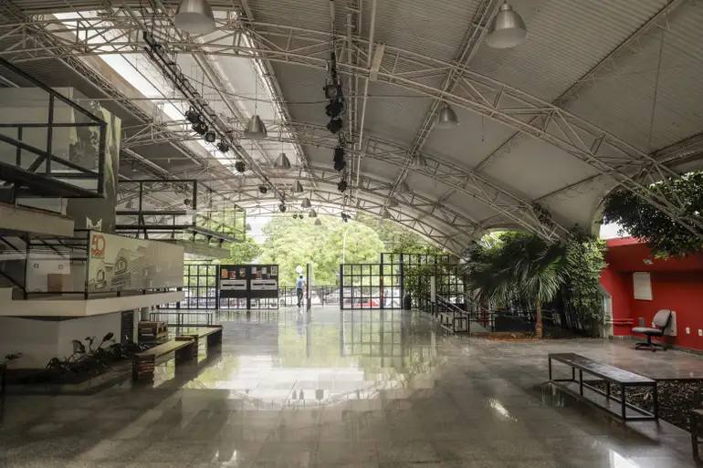

Espaço Cultural Renato Russo
Localização: Brasília - DF

Arte e cultura
O Espaço Cultural Renato Russo reúne atividades e espaços voltados às artes e à cultura, com programação que pode incluir exposições, apresentações e ações formativas. Consulte a agenda antes da visita.